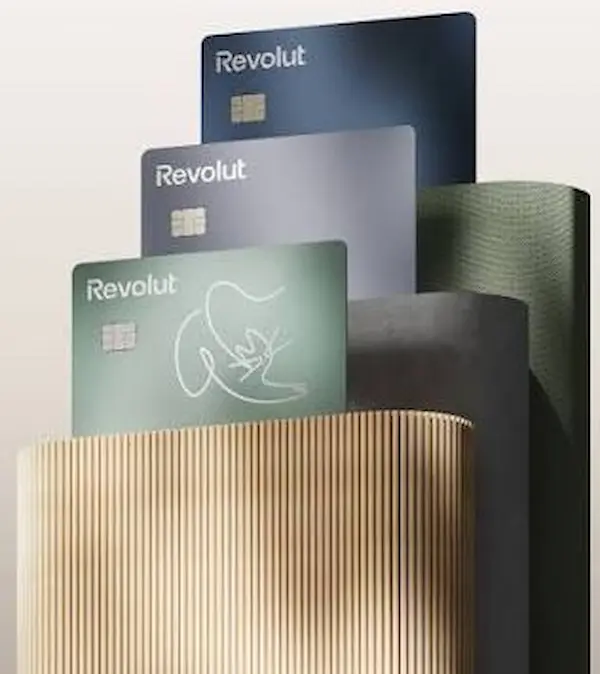
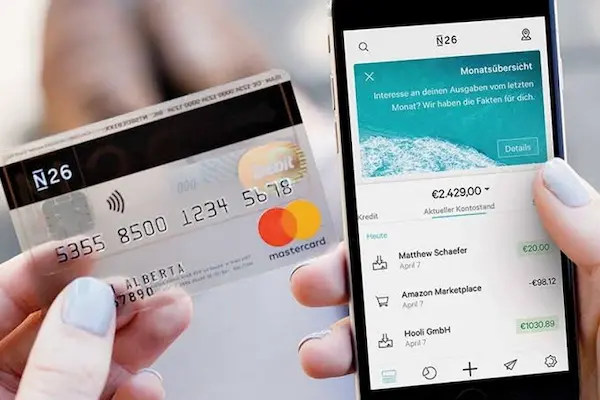
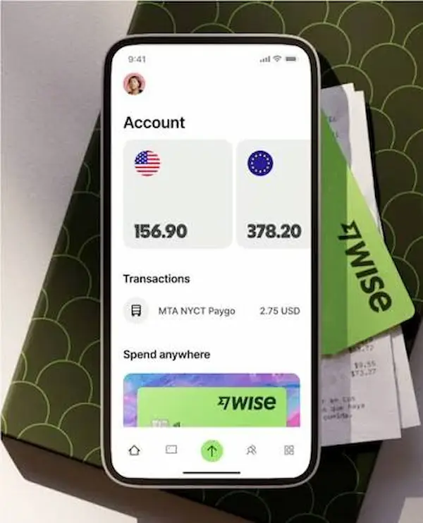

Revolut
Es una excelente opción que te permite pagar en más de 150 divisas aplicando el tipo de cambio interbancario. Además, con su Plan Estándar puedes sacar hasta 200€ al mes en cajeros de cualquier país sin pagar comisiones, y su aplicación resulta muy intuitiva para controlar tus gastos diarios durante el viaje
Lo mejor: hasta 200 € al mes gratis en cajeros (Plan Estándar).

N26
Este banco te proporciona un IBAN español, funcionando a todos los efectos como una cuenta bancaria tradicional. Su gran ventaja es que no cobra absolutamente nada de comisión por pagar con tarjeta en otra moneda en comercios, y aplica una comisión muy reducida (1,7%) si necesitas sacar efectivo fuera de la zona euro.
Lo mejor: cero comisión en pagos con tarjeta en comercios.

Wise
Ideal para viajes largos, destaca por su cuenta multidivisa que te permite guardar y gestionar saldo en más de 40 monedas distintas simultáneamente. Las conversiones de moneda se realizan al instante desde la app, ofreciendo siempre una transparencia total y comisiones minúsculas en cada transacción que hagas
Lo mejor: guarda saldo en más de 40 monedas a la vez.